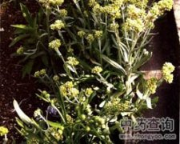

鼠曲草

拼音
Shǔ Qǔ Cǎo
别名
黄花曲草、清明菜、田艾、佛耳草、土菌陈[广东]、酒曲绒
来源
菊科鼠曲草属植物鼠曲草Gnaphalium affine D. Don，的全草。春夏采收，洗净鲜用或晒干。
生境分布
野生于田边、山坡及路边。我国大部分地区有分布。主产于江苏、上海郊区及浙江等地。
药材特点
一年生或二年生草本，高10～50厘米。茎直立，密被白绵毛，通常自基部分枝。叶互生；下部叶匙形，上部叶匙形至线形，长2～6厘米，宽3～10毫米，先端圆钝具尖头，基部狭窄，抱茎，全缘，无柄，质柔软，两面均有白色绵毛，花后基部叶雕落。头状花序顶生，排列呈伞房状；总苞球状钟形，苞片多列，金黄色，干膜质；花全部管状，黄色，周围数层是雌花，花冠狭窄如线，花柱较花冠为短；中央为两性花，花管细长，先端5齿裂，雄蕊5，柱头2裂。瘦果椭圆形，长约0.5毫米，具乳头状毛，冠毛黄白色。花期4～6月。果期8～9月。
性状
于燥全草带有花序，茎灰白色，密被绵毛，质较柔软。叶片两面密被灰白色绵毛，皱缩卷曲，柔软不易脱落。花序顶生，苞片卵形，赤黄色，膜质，多数存在，花托扁平，花冠多数萎落。味微苦带涩。
性味
甘，平。
功能主治
止咳平喘，降血压，祛风湿。用于感冒咳嗽，支气管炎，哮喘，高血压，蚕豆病，风湿腰腿痛；外用治跌打损伤，毒蛇咬伤。
用法用量
0.5～1两；外用适量，鲜品捣烂敷患处。
化学成分
全草含5％黄酮甙，0.05％挥发油，微量生物碱和甾醇，0.58％非皂化物，又含维生素B、胡萝卜素、叶绿素、树脂、脂肪等。花含木犀草素4′-β-D-葡萄糖甙。
药理作用
1：小鼠反复吸入浓氨水形成慢性咳嗽后：灌服鼠曲草煎剂，有一定的止咳作用
摘录
《全国中草药汇编》